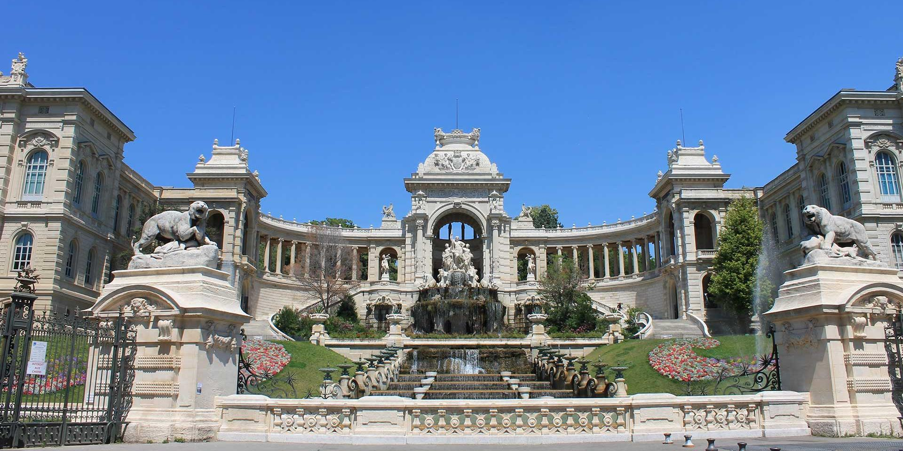
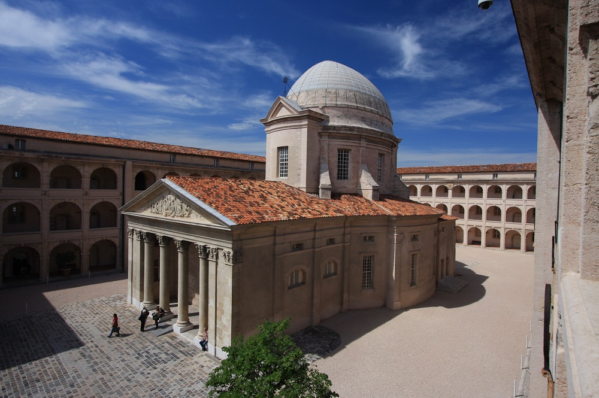
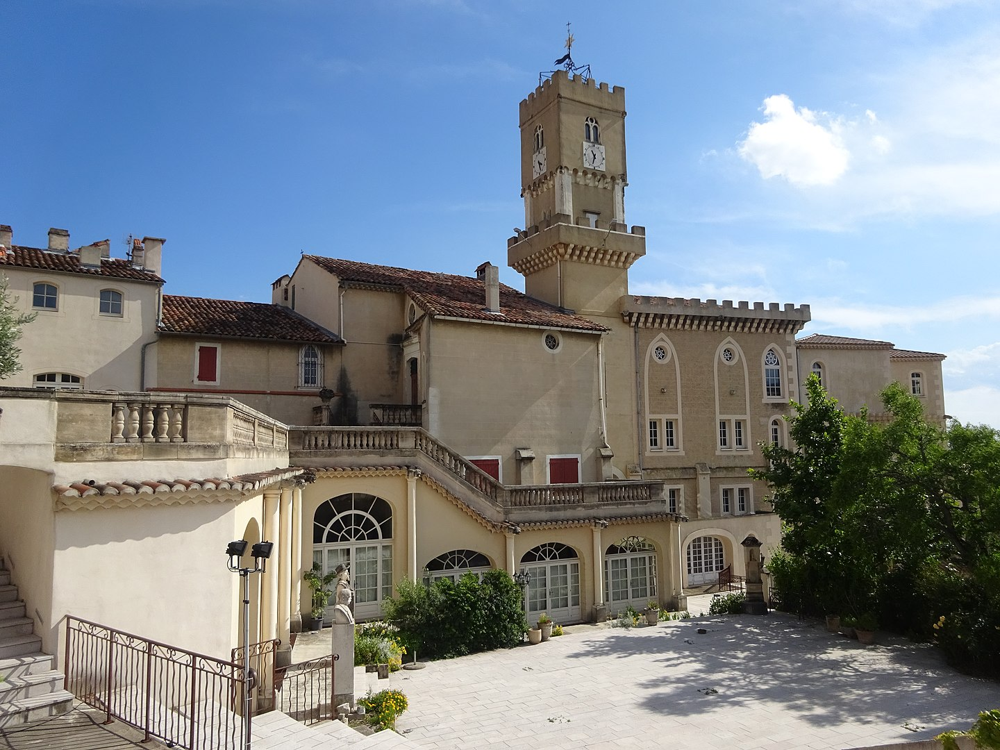
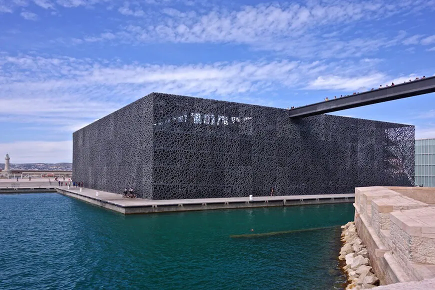

Palais Longchamp
- Le palais Longchamp est un palais-château d'eau de style néo-classique-Second Empire du XIXᵉ siècle,
le muséum possède 83 000 spécimens d'animaux, 200 000 spécimens végétaux, 81 000 spécimens de paléontologie, et de 8 000 échantillons de minéraux. Une partie de ses collections est présentée au public, répartie sur quatre salles :
la salle Safari, regroupant des animaux naturalisés ;
la salle de Provence, sur la faune et la flore régionales. Ses murs sont ornés de fresques peintes par Raphaël Ponson et classées monuments historiques (récemment restaurée dans l’esprit de son inauguration en 1869) ;
la salle d'ostéologie, regroupant squelettes et crânes ;la salle de préhistoire, sur l'évolution.Le muséum organise de nombreuses conférences et des expositions temporaires.
- Adresse : Bd Jard. Zoologique, 13004 Marseille
- Coordonnées : 43° 18′ 15″ N, 5° 23′ 40″ E
- Situation : Parc Longchamp
- Date d'ouverture : 15 août 1869
- Horaires :
- Lundi 07:00–20:00
- Mardi 07:00–20:00
- Mercredi 07:00–20:00
- Jeudi 07:00–20:00
- Vendredi 07:00–20:00
- Samedi 07:00–20:00
- Dimanche 07:00–20:00
- Téléphone : 04 91 55 25 51
- Architecte : Henri-Jacques Espérandieu

Musée Parc Borely
- Le musée des Arts décoratifs, de la Faïence et de la Mode, ouvert au public gratuitement depuis le 15 juin 2013 dans le château Borély, se situe au nᵒ 134 avenue Clot-Bey à Marseille.Une vocation ancienne à devenir un musée
Le château appartient maintenant à la Ville de Marseille et constitue un précieux témoignage de l'architecture du XVIIIe siècle en Provence. Le phénomène typiquement méridional de la "Bastide" a sans doute trouvé là son apogée.
Le Château Borély est bien, conformément aux souhaits de Louis Borély, la plus vaste et la plus belle des bastides du terroir.
La vocation de l’ancienne demeure de la famille Borély comme musée est ancienne. Elle a notamment abrité le musée d’archéologie de 1863 à 1989. Ce lieu abrite actuellement le Musée des Arts décoratifs, de la Faïence et de la Mode.
- Adresse : Av. du Parc Borély, 13008 Marseille
- Situation : Parc Borély
- Coordonnées : 3° 15′ 27″ N, 5° 22′ 55″ E4
- Horaires :
- lundi Fermé
- mardi 09:00–18:00
- mercredi 09:00–18:00
- jeudi 09:00–18:00
- vendredi 09:00–18:00
- samedi 09:00–18:00
- dimanche 09:00–18:00
- Téléphone : 04 91 55 33 60
- Architecte : J.-L. Clérisseau

Monument musée Vieille Charité
- La Vieille charité, située 2, rue de la Charité, au cœur du quartier du Panier dans le 2ᵉ arrondissement de Marseille,
dans le quartier officiel des Grands-Carmes, est un bâtiment édifié au XVIIᵉ siècle, sur les plans de Pierre Puget pour abriter les indigents et les pauvres de la ville.
Ils composent deux musée Le musée d'archéologie méditerranéenne est situé au premier étage ; il regroupe trois départements :
les antiquités égyptiennes; les antiquités classiques (civilisations étrusques et romaines, civilisation grecque, civilisations du Proche et Moyen-Orient).
Et Le musée d’arts africains, océaniens et amérindiens l’Afrique avec des masques et reliquaires des donations de maître Guerre et de la Chambre de commerce et d’industrie de Marseille ;
l’Océanie avec la collection de crânes du docteur Gastaut et de masques de danse ; l’Amérique avec une collection de masques mexicain
- Adresse : 2 Rue de la Charité, 13002 Marseille
- Coordonnées : 43° 18′ 01″ N, 5° 22′ 04″ E
- Horaires :
- lundi Fermé
- mardi 09:00–18:00
- mercredi 09:00–18:00
- jeudi 09:00–18:00
- vendredi 09:00–18:00
- samedi 09:00–18:00
- dimanche 09:00–18:00
- Téléphone : 04 91 14 58 80
- Architecte : Pierre Puget

Musée Provençale
- Le Musée Provençal, anciennement Musée du Terroir Marseillais est un musée des arts et traditions populaires situé à Château Gombert dans le 13ᵉ arrondissement de Marseille.
Il a été créé en 1927 par le félibre Jean-Baptiste Julien-Pignol et constitue l'un des premiers musées d'Art et Traditions Populaires de France.
À sa création, le musée ne comportait initialement qu'une seule salle : la cuisine provençale, conçue comme un foyer de culture populaire où les mainteneurs pouvaient se réunir comme autrefois à la veillée, échangeant leurs souvenirs et ravivant les usages anciens dans la langue de leurs pères.
Près d'un siècle plus tard, les collections réunissent désormais des milliers d'objets répartis dans dix salles : la cuisine provençale, la chambre bourgeoise, la salle-à-manger, la salle Renaissance, la salle des santons,
celle consacrée aux jouets et celle destinée à la présentation des costumes et trésors textiles voisinent avec une bibliothèque ancienne riche de plusieurs dizaines de milliers de volumes.
Les collections proviennent essentiellement de dons rassemblés depuis un siècle.
En 2020-2021, le musée connaît une campagne de travaux de restauration de ses locaux historiques.
Le musée est géré depuis 1939 par une association, l'AOSRCG, Association des Œuvres Sociales et Régionalistes de Château-Gombert.
- Adresse : 5 Pl. des Héros, 13013 Marseille
- Horaires :
- lundi 10:00–10:30
- mardi Fermé
- mercredi Fermé
- jeudi Fermé
- vendredi Fermé
- samedi Fermé
- dimanche Fermé
- Téléphone : 04 91 68 14 38
- Architecte : Jean-Baptiste Julien-Pignol

Musée Mucem
- Le Musée des Civilisations de l'Europe et de la Méditerranée est un musée national situé à Marseille.
Il est inauguré par le président Hollande, le 7 juin 2013, alors que Marseille est capitale européenne de la culture.
le Mucem est consacré à l'anthropologie culturelle des sociétés d'Europe et de la Méditerranée. En créant ce musée à Marseille,
l'État dote la deuxième ville de France d'un équipement culturel majeur, placé sous la tutelle du Ministère de la Culture.
- Adresse : 7 promenade Robert-Laffont 13002 Marseille
- Coordonnées : 43° 17′ 48″ N, 5° 21′ 36″ E
- Horaires :
- lundi 10:00–18:00
- mardi Fermé
- mercredi 10:00–18:00
- jeudi 10:00–18:00
- vendredi 10:00–18:00
- samedi 10:00–18:00
- dimanche 10:00–18:00
- Téléphone : 04 84 35 13 13
- Création : 7 juin 2013
- Gestionnaire : Service des Musées de France
- Surface : 45 000 m2 (sur trois sites)
- Organisation mère : Ministère de la Culture
- Type : Musée national relevant du Ministère de la Culture
- Architecte : Rudy Ricciotti
Musée Cantini
- Le musée présentait initialement ses œuvres du xviie au xixe siècle, notamment des peintres de l'école provençale du xixe siècle, tels que Paul Guigou, Adolphe Monticelli, Émile Loubon, René Seyssaud, Félix Ziem, Maurice Bompard, Jean-Antoine Constantin, Gustave Ricard ou José Silbert.
Il s’est depuis plus particulièrement spécialisé dans l'art moderne de la première moitié du xxe siècle jusqu'aux années soixante et abrite aujourd'hui l'une des plus importantes collections publiques françaises de province couvrant la période 1900-19805,
- Coordonnées :43° 17′ 32″ N, 5° 22′ 41″ E
- Horaires
- lundi Fermé
- mardi 09:00–18:00
- mercredi 09:00–18:00
- jeudi Fermé
- vendredi 09:00–18:00
- samedi Fermé
- dimanche Fermé